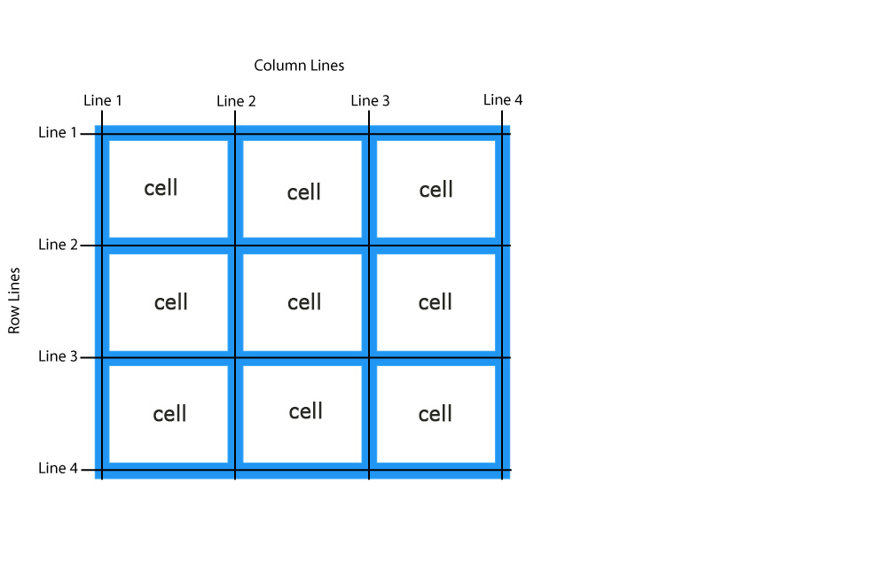

CSS Grid Layout
In the first case, in design it is easy to see grid from rows and columns. In the other, grid clearly not visible in design.
In code we can see a lot of squares that form a grid - css grid layout
CSS Grid Layout like modern old good table layout
Tables layouts instead css grid layouts contain redundant code, not semantic, weigh a lot and inflexible, allows to create only a strict design.
The order of items in the HTML markup
is irrelevant in design
Grid Layout lets us properly separate the order of elements in the source, in markup, from their visual presentation.
What about difference css grid with flexbox?
Grid is more flexible tool that operates with cells in two dimensions - along rows and along columns at the same time
Browser support
Almost all major desktop and mobile browsers - Chrome, Firefox, Opera, MS Edge - can boast CSS support for Grid Layout
CSS Grid module by default
By default, CSS Grid module will draw a table in one column without spaces between the cells.
Grid tracks - rows and columns
Grid tracks - rows and columns
In huge grid-tables with a large number of cells, the notation repeat() and automation self-draw new cells will often help out.
Track's sizes
We can create a grid with fixed or flexible sizes –pixels, % and fr unit (fraction) and minmax() function. And combine all variations.
Grid Gaps
Grid-gap combine with other css methods (Margins, padding) are contribute to the visible spaces between rows and columns.
Grid Lines and cells
Grid areas
Merging several cells is similar like in tables. Area is defined by lines, between which this is located.
Z-index in css grid layouts
Unlike HTML tables in CSS Grid, cells and areas are located not only in the plane - they can also be located in a “stack”, like layers in Photoshop.
Aligning Grid Items (Box Alignment)
justify-items and justify-self align items along the row axis
align-items and align-self align items along the column axis
Intuitive clarity, conciseness, automation of CSS Grid really make creating interfaces easier.
good luck